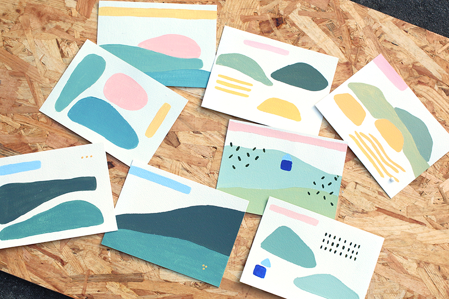

On se souvient de certains paysages, on s'en souvient très bien. On le voit, dans notre tête, on le voit comme si on y était. Et pourtant, quand on tente de les décrire, on continue d'énumérer les différents éléments de ce paysage, un par un, les uns après les autres. Une colline, une maison, une autre colline, quelques fleurs...
Série de duos de cartes postales sur les souvenirs de paysages, acrylique.
Décembre 2016
